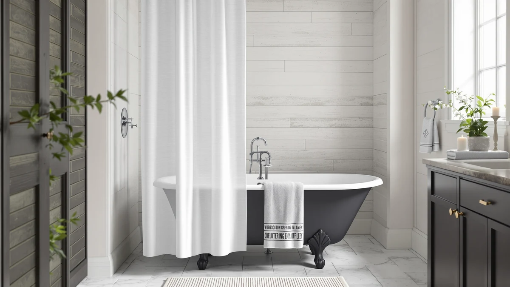

The Best Shower Curtain Liners For clawfoot tubs (2026)
Prices and picks verified as of September 2026. Independent, reader-supported reviews.


Quick Answer
The best shower curtain liners for clawfoot tubs need a size and weight that hold up on a freestanding tub with no wall backing the curtain on at least one side. The Dark Green Pine Forest Shower from Litabel leads our comparison at $9.99, in a 72 by 72 inch Polyester and PEVA build that fits a standard clawfoot drop without hemming.
Our pick: Dark Green Pine Forest Shower, $9.99 Check Price on Amazon
Bottom line: our top pick is the Dark Green Pine Forest Shower Curtain at $9.99. The best budget option is the Seenus Waterproof Fabric Shower Curtain Liner with 3 at $11.95.
Things to Know Before You Buy
- Most clawfoot setups need a wider or longer liner than a standard alcove. A freestanding tub with a curved or oval rod needs more fabric to close the gap than the 72 by 72 inch panel that fits a three-wall shower stall; the SORTTO No Hook liner's 71 by 74 inch size accounts for that extra reach.
- Material affects how the liner hangs around a curve. Polyester and PEVA liners make up most of this lineup, but the heavier XOGUIBO cotton pick drapes more naturally around a curved rod than a lightweight PEVA panel, which tends to pucker at the seams.
- Price spans from $9.99 to $27.99. The Dark Green Pine Forest Shower is the least expensive pick here, and the XOGUIBO linen-style cotton curtain is the most expensive, a gap that reflects the material upgrade rather than added features.
- Review history is thin across this category. Only the Seenus Waterproof Fabric Shower Curtain carries a listed rating in this lineup, a 4.5-star average from a single verified review, so weigh material and size specs more heavily than star ratings when comparing these picks.
- None of these liners are marketed specifically for clawfoot tubs. They are general-purpose shower curtains and liners that work well on a clawfoot setup once you match the size to your rod configuration, rather than a specialized clawfoot-only product category.
The best shower curtain liners for clawfoot tubs need to handle a setup that most bathroom liners were never designed for: a freestanding tub with no wall backing the curtain on at least one side, plus a rod that often sits higher than a standard alcove to clear the tub's rolled rim. We compared seven current liners on material, listed size, price, and verified owner reviews, then narrowed the list to the ones that hold their shape whether you hang them from a wall-mounted straight rod or a curved wraparound one.
The Dark Green Pine Forest Shower from Litabel leads this guide at $9.99, the lowest price in the lineup, in a 72 by 72 inch Polyester and PEVA build that fits a standard clawfoot drop without hemming. It is not the only liner worth considering: the Ocean Beach Coastal Nautical Summer from Visioun and the SORTTO No Hook curtain both suit clawfoot rods that sit farther from the wall, and the XOGUIBO Linen Shower Curtain Cream trades the $9.99 price for a heavier 100 percent cotton weight that drapes better around a curved rod.
Prices across this lineup run from $9.99 to $27.99, and sizes range from a 70 inch width up to a 74 inch drop, so match the number to your tub's rod placement before you buy rather than assuming every clawfoot setup takes the same 72 by 72 inch panel. Below we break down what each liner is actually good for, plus the honest drawbacks worth knowing before you commit to one.
Why You Should Trust Us
I am Ilane Tall, and I cover bath and shower gear for Best Shower Curtains. For this guide to the best shower curtain liners for clawfoot tubs, I focused on the details that decide whether a general-purpose liner will actually work on a freestanding tub: listed width and drop, material weight, and how a panel behaves when it has to bridge a curved rod instead of hanging flat against two walls.
We do not own or install every product we cover. Instead we research each listing closely, cross-check material and size claims against the manufacturer's own description, and weigh star ratings against review volume where a rating exists. Every price, material, and size figure in this guide comes from the current Amazon listing.
How We Picked
We started with a wide list of shower curtains and liners and narrowed it to the seven that best suit a clawfoot tub's specific constraints: a listed size at or above the standard 72 by 72 inch panel, a material that can either resist water on its own or pair cleanly with a separate liner, and a price under $30.
Because clawfoot tubs vary widely in rod style, wall clearance, and rim height, we prioritized listings with clear width and length dimensions over ones that only advertised a vague "fits most showers" claim. We excluded curtains that did not state their material, since that omission makes it impossible to judge how the panel will drape around a curve.
How We Compared
We compared each of the best shower curtain liners for clawfoot tubs in this guide on the same facts: listed material, panel width and length, current price, and star rating and review count where the listing provides one, all pulled directly from the live Amazon listing rather than promotional copy.
We also weighed size against typical clawfoot rod configurations. The SORTTO No Hook liner's 71 by 74 inch size suits a wraparound rod better than a narrower curtain would, while the Rubbermaid Frosty liner's 70 by 72 inch size is the most compact in this lineup and fits best on a straight, wall-mounted rod.
Our Picks

Dark Green Pine Forest Shower
What we like
- At $9.99, it is the least expensive pick in this entire guide
- The 72 by 72 inch size matches the drop most clawfoot setups need without alteration
- The dark green pine forest print hides water spots better than a plain white liner
Flaws but not dealbreakers
- Polyester and PEVA construction is lighter than the XOGUIBO cotton pick, so it can billow more on a wraparound rod without extra clips
- This is a newer listing without an established review history yet
| Material | Polyester / PEVA |
| Size | 72"W x 72"L (Pack of 1) |
The Dark Green Pine Forest Shower is our pick for the best shower curtain liner for clawfoot tubs because it pairs the lowest price in this guide with a standard 72 by 72 inch size that fits most clawfoot drops without hemming or doubling up panels. Its Polyester and PEVA build resists splashing on its own, which matters on a freestanding tub where water can run down both the inside and outside of the curtain.
At $9.99, it costs less than half of several other picks in this lineup, including the $27.99 XOGUIBO cotton curtain. The dark green pine forest print also does double duty by disguising water spots and light staining better than a plain white panel would, though the lighter PEVA fabric can billow more than a heavier cotton liner if your rod sits away from a wall on both sides.

Ocean Beach Coastal Nautical Summer
What we like
- 72 by 72 inch size matches the Dark Green Pine Forest pick's coverage for a standard clawfoot drop
- Coastal nautical print adds visual interest beyond a solid-color liner
- Polyester and PEVA blend resists splashing without a separate liner behind it
Flaws but not dealbreakers
- At $16.99 it costs $7 more than our top pick for the same 72 by 72 inch coverage
- No listed rating yet, so there is no review history to weigh against the print's durability
| Material | Polyester / PEVA |
| Size | 72"W x 72"L (Pack of 1) |
The Ocean Beach Coastal Nautical Summer is our runner-up because it matches the Dark Green Pine Forest pick's 72 by 72 inch coverage while offering a different look, a coastal nautical print instead of a forest scene, for buyers who want a specific aesthetic in a clawfoot bathroom that often doubles as a focal point of the room.
At $16.99, it costs more than our top pick, and the difference here comes down to design rather than any material or size upgrade; both curtains share the same Polyester and PEVA construction and 72 by 72 inch size. Choose this one if the coastal print fits your bathroom's decor better than the pine forest scene above.

Shower Curtains for Bathroom Boho
What we like
- At $12.99, it sits close to the Dark Green Pine Forest pick's budget-friendly price
- 72 by 72 inch size covers a standard clawfoot drop
- Boho pattern suits a bathroom built around a vintage clawfoot tub better than a plain print
Flaws but not dealbreakers
- Boho patterns can clash with a more modern bathroom, so match it to your existing decor before buying
- No listed rating yet on this Amazon listing
| Material | Polyester / PEVA |
| Size | 72"W x 72"L (Pack of 1) |
The Shower Curtains for Bathroom Boho pick gives you a patterned option aimed squarely at the vintage aesthetic many clawfoot tub bathrooms are built around. At $12.99, it sits close to our top pick's budget price while offering a boho print instead of a solid or nature scene.
Its 72 by 72 inch size matches the coverage of the two picks above, so sizing is not a differentiator here; the boho pattern is the reason to choose this curtain over the Dark Green Pine Forest or Ocean Beach options. It does not yet carry a listed rating, so weigh the design against the more established alternatives in this guide if review history matters to you.

XOGUIBO Linen Shower Curtain Cream
What we like
- 100 percent cotton construction gives it a heavier drape than every Polyester and PEVA pick in this lineup
- The cream linen-style finish suits a clawfoot tub's classic, vintage look
- Heavier fabric hangs more naturally around a curved rod than a lightweight PEVA panel
Flaws but not dealbreakers
- At $27.99, it costs nearly three times as much as our top pick
- Cotton is not inherently waterproof, so pair it with a separate liner behind it if your clawfoot tub lacks a wall on either side
| Material | 100% cotton |
| Size | 72"W x 72"L |
The XOGUIBO Linen Shower Curtain Cream is the only 100 percent cotton pick in this guide, and that heavier weight matters specifically on a clawfoot tub, where a curtain often has to bridge a curved or oval rod rather than hang flat against two walls. Cotton drapes with more natural weight and fewer creases at the seams than the Polyester and PEVA options covered above.
At $27.99, it is the most expensive pick in this lineup, close to three times the price of the Dark Green Pine Forest liner. Because cotton is not inherently waterproof the way PEVA is, it works best paired with a separate waterproof liner behind it, especially on a freestanding tub where splashing can reach both sides of the curtain.

Rubbermaid Frosty Shower Curtain Liner
What we like
- Recognizable Rubbermaid brand name in a category full of lesser-known listings
- At $13.51, it lands in the middle of this lineup's price range
- Frosted finish provides some privacy without blocking light the way an opaque print would
Flaws but not dealbreakers
- At 70 by 72 inches, it is the narrowest liner in this guide, so it is not the pick for a fully freestanding wraparound rod
- No listed rating yet on this specific listing
| Material | Polyester / PEVA |
| Size | 70"W x 72"L (Pack of 1) |
The Rubbermaid Frosty Shower Curtain Liner brings a well-known household brand to a category where most listings come from names most shoppers have never heard of. Its frosted finish lets light through while still providing privacy, a middle ground between a fully opaque print and a clear liner.
At 70 by 72 inches, it runs two inches narrower than the 72 by 72 inch picks above, which makes it the pick for a clawfoot tub set against a wall on at least one side rather than one that needs a full oval wraparound rod. At $13.51, it costs slightly more than our top pick for a size that covers less ground.

Seenus Waterproof Fabric Shower Curtain
What we like
- The only liner in this guide with a listed rating, a 4.5-star average
- At $11.95, it is the second-least-expensive pick in this lineup
- 72 by 72 inch size matches the standard coverage most clawfoot drops need
Flaws but not dealbreakers
- That 4.5-star average is built on a single verified review, so treat it as a data point rather than a proven track record
- Waterproof fabric construction still benefits from a separate liner if your rod fully encircles the tub
| Material | Polyester / PEVA |
| Size | 72x72 |
The Seenus Waterproof Fabric Shower Curtain is the only pick in this guide with a listed star rating, a 4.5-star average, though that figure comes from just one verified review so far. We included it because a rating of any kind, even a thin one, gives you a data point the other unrated listings in this guide do not.
At $11.95, it undercuts every pick here except our top choice, and its 72 by 72 inch size matches the standard coverage most clawfoot setups need. As more reviews come in, this rating could shift, so weigh it as an early signal rather than a settled track record.

SORTTO No Hook Shower Curtain
What we like
- At 71 by 74 inches, it has the longest drop of any pick in this guide
- No-hook design threads directly onto the rod, reducing gaps that let water splash through
- The extra length helps close the gap on a rod mounted high to clear a clawfoot tub's rolled rim
Flaws but not dealbreakers
- At $15.29, it costs more than our top pick and several other options here
- No listed rating yet on this Amazon listing
| Material | Polyester / PEVA |
| Size | 71"W x 74"L (Pack of 1) |
The SORTTO No Hook Shower Curtain has the longest drop in this lineup at 74 inches, two inches more than the standard 72 inch panels covered above. That extra length matters on a clawfoot tub, where the rod is often mounted higher than a standard alcove rod to clear the tub's rolled rim, leaving a gap a standard-length curtain will not close.
Its no-hook design threads directly onto the rod instead of relying on separate rings, which reduces the small gaps between hooks where water can splash through on a freestanding tub. At $15.29, it costs more than our budget and mid-tier picks, but the added length and hookless design are worth the difference if your rod sits higher than standard.
Quick Comparison
| Product | Material | Price | Rating | Best for | Get it |
|---|---|---|---|---|---|
| Dark Green Pine Forest Shower | Polyester / PEVA | $9.99 | 4 | Best overall value | View on Amazon → |
| Ocean Beach Coastal Nautical Summer | Polyester / PEVA | $16.99 | 4 | Best coastal print | View on Amazon → |
| Shower Curtains for Bathroom Boho | Polyester / PEVA | $12.99 | 4 | Best boho pattern | View on Amazon → |
| XOGUIBO Linen Shower Curtain Cream | 100% cotton | $27.99 | 4 | Best heavier cotton drape | View on Amazon → |
| Rubbermaid Frosty Shower Curtain Liner | Polyester / PEVA | $13.51 | 4 | Best for a wall-backed tub | View on Amazon → |
| Seenus Waterproof Fabric Shower Curtain | Polyester / PEVA | $11.95 | 4.5 | Best with a listed rating | View on Amazon → |
| SORTTO No Hook Shower Curtain | Polyester / PEVA | $15.29 | 4 | Best for a high-mounted rod | View on Amazon → |
The Competition
Among the four unrated newcomers in this guide, the Ocean Beach Coastal Nautical Summer and Shower Curtains for Bathroom Boho picks share the same 72 by 72 inch size and Polyester and PEVA material as our top pick, so the choice between them comes down to which print matches your bathroom rather than any functional difference. We ranked the Dark Green Pine Forest Shower highest mainly on price, at $9.99 versus $16.99 and $12.99 for those two alternatives.
We passed over generic listings that did not state a specific width and length, since that omission makes it impossible to judge whether a panel will actually close the gap on a wraparound rod. The Rubbermaid Frosty liner's narrower 70 by 72 inch size ruled it out as the top pick for a fully freestanding setup, even though its recognizable brand name and frosted finish are real advantages for a tub with at least one wall behind it. After weighing material, size, price, and the single available rating across all seven picks, the best shower curtain liners for clawfoot tubs remain led by the Litabel Dark Green Pine Forest Shower for most bathrooms, with the SORTTO No Hook curtain as the pick for a high-mounted rod.
Frequently Asked Questions
Do standard shower curtain liners fit a clawfoot tub's curved rod?
Not always without adjustment. A curved or oval rod that fully encircles a clawfoot tub needs more fabric than a straight wall-mounted rod does, so a 72 by 72 inch liner like the Dark Green Pine Forest Shower or Ocean Beach Coastal Nautical Summer works best when the tub sits against at least one wall. If your rod fully wraps the tub, the SORTTO No Hook curtain's longer 74 inch drop helps close the extra gap.
What size shower curtain liner do I need for a clawfoot tub?
Measure your rod's height above the tub rim and its total length before choosing. Most clawfoot setups use a 70 to 74 inch drop, the range covered by the Rubbermaid Frosty liner at the narrow end and the SORTTO No Hook curtain at the long end, so match the number to your specific rod rather than assuming every clawfoot tub needs the same size.
Should I choose a fabric or a plastic liner for a clawfoot tub?
It depends on how your rod is shaped. A heavier fabric liner like the XOGUIBO Linen Shower Curtain Cream drapes more naturally around a curved rod, while a lighter Polyester and PEVA liner like the Dark Green Pine Forest Shower resists water on its own and costs less, which matters more on a straight, wall-mounted rod where drape is less of an issue.